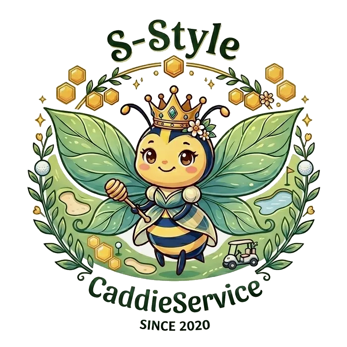

王冠のクイーンビー「BiBi」と一緒に。Sランクキャディを育て、全国へお届けします。契約ゴルフ場からイベント、ご指名まで。

育成済みのSランクキャディを、全国のご契約ゴルフ場へ安定してお届けします。
契約外のゴルフ場・コンペにも単発で派遣。大切な一日を華やかに彩ります。
プレーヤー様からのご依頼も受付。※事前にゴルフ場への確認が必須です。
独自基準で磨いたSランクキャディ。マナーも技術も高水準でお届けします。
北海道から沖縄まで8拠点。地域を越えて、必要な時に必要な人材を。
契約はもちろん、単発・イベントにも対応。急なご相談もお気軽に。
本拠点の千葉を中心に、全国7支店。地域に根ざしたネットワークで、最適なキャディをアサインします。
早朝の準備からラウンド、次の街への移動まで。BiBiと一緒に、旅するキャディのリアルな一日をご紹介します。未経験の方も、働くイメージがきっと湧きます。
ゴルフ場様・イベントのご依頼はこちらから。採用エントリーもお待ちしています。